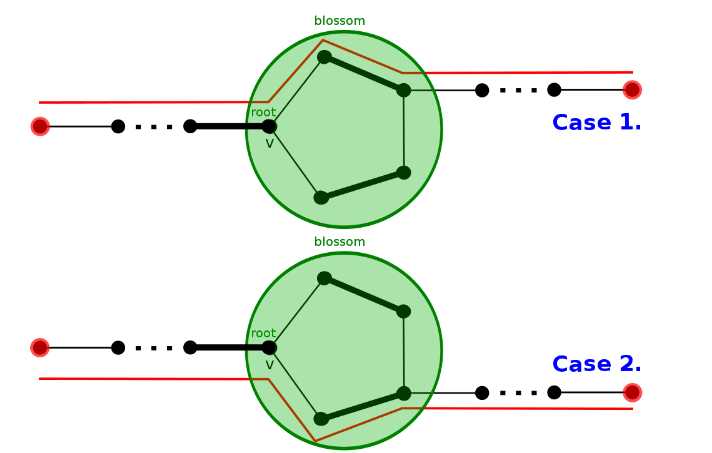

一般图最大匹配
带花树算法（Blossom Algorithm）
开花算法（Blossom Algorithm，也被称做带花树）可以解决一般图最大匹配问题（maximum cardinality matchings）。此算法由 Jack Edmonds 在 1961 年提出。 经过一些修改后也可以解决一般图最大权匹配问题。 此算法是第一个给出证明说最大匹配有多项式复杂度。
一般图匹配和二分图匹配（bipartite matching）不同的是，图可能存在奇环。

以此图为例，若直接取反（匹配边和未匹配边对调），会使得取反后的
下面考虑一般图的增广算法。 从二分图的角度出发，每次枚举一个未匹配点，设出发点为根，标记为 「o」，接下来交错标记 「o」 和 「i」，不难发现 「i」 到 「o」 这段边是匹配边。
假设当前点是
未拜访过，当 是未匹配点，则找到增广路径，否则从 的配偶找增广路。 已拜访过，遇到标记「o」代表需要 缩花，否则代表遇到偶环，跳过。
遇到偶环的情况，将他视为二分图解决，故可忽略。缩花 后，再新图中继续找增广路。
设原图为
- 若
存在增广路， 也存在。 - 若
存在增广路， 也存在。
设非树边（形成环的那条边）为
观察可知，从环外的边出去有两种情况，顺时针或逆时针。

于是 缩花 与 不缩花 都不影响正确性。
实作上找到 花 以后我们不需要真的 缩花，可以用数组纪录每个点在以哪个点为根的那朵花中。
复杂度分析 Complexity Analysis
每次找增广路，遍历所有边，遇到 花 会维护 花 上的点，
枚举所有未匹配点做增广路，总共
参考代码
参考代码
// graph
template <typename T>
class graph {
public:
struct edge {
int from;
int to;
T cost;
};
vector<edge> edges;
vector<vector<int>> g;
int n;
graph(int _n) : n(_n) { g.resize(n); }
virtual int add(int from, int to, T cost) = 0;
};
// undirectedgraph
template <typename T>
class undirectedgraph : public graph<T> {
public:
using graph<T>::edges;
using graph<T>::g;
using graph<T>::n;
undirectedgraph(int _n) : graph<T>(_n) {}
int add(int from, int to, T cost = 1) {
assert(0 <= from && from < n && 0 <= to && to < n);
int id = (int)edges.size();
g[from].push_back(id);
g[to].push_back(id);
edges.push_back({from, to, cost});
return id;
}
};
// blossom / find_max_unweighted_matching
template <typename T>
vector<int> find_max_unweighted_matching(const undirectedgraph<T> &g) {
std::mt19937 rng(std::random_device{}());
vector<int> match(g.n, -1); // 匹配
vector<int> aux(g.n, -1); // 时间戳记
vector<int> label(g.n); // 「o」或「i」
vector<int> orig(g.n); // 花根
vector<int> parent(g.n, -1); // 父节点
queue<int> q;
int aux_time = -1;
auto lca = [&](int v, int u) {
aux_time++;
while (true) {
if (v != -1) {
if (aux[v] == aux_time) { // 找到拜访过的点 也就是LCA
return v;
}
aux[v] = aux_time;
if (match[v] == -1) {
v = -1;
} else {
v = orig[parent[match[v]]]; // 以匹配点的父节点继续寻找
}
}
swap(v, u);
}
}; // lca
auto blossom = [&](int v, int u, int a) {
while (orig[v] != a) {
parent[v] = u;
u = match[v];
if (label[u] == 1) { // 初始点设为「o」找增广路
label[u] = 0;
q.push(u);
}
orig[v] = orig[u] = a; // 缩花
v = parent[u];
}
}; // blossom
auto augment = [&](int v) {
while (v != -1) {
int pv = parent[v];
int next_v = match[pv];
match[v] = pv;
match[pv] = v;
v = next_v;
}
}; // augment
auto bfs = [&](int root) {
fill(label.begin(), label.end(), -1);
iota(orig.begin(), orig.end(), 0);
while (!q.empty()) {
q.pop();
}
q.push(root);
// 初始点设为「o」，这里以「0」代替「o」，「1」代替「i」
label[root] = 0;
while (!q.empty()) {
int v = q.front();
q.pop();
for (int id : g.g[v]) {
auto &e = g.edges[id];
int u = e.from ^ e.to ^ v;
if (label[u] == -1) { // 找到未拜访点
label[u] = 1; // 标记「i」
parent[u] = v;
if (match[u] == -1) { // 找到未匹配点
augment(u); // 寻找增广路径
return true;
}
// 找到已匹配点 将与她匹配的点丢入queue 延伸交错树
label[match[u]] = 0;
q.push(match[u]);
continue;
} else if (label[u] == 0 && orig[v] != orig[u]) {
// 找到已拜访点 且标记同为「o」代表找到「花」
int a = lca(orig[v], orig[u]);
// 找LCA 然后缩花
blossom(u, v, a);
blossom(v, u, a);
}
}
}
return false;
}; // bfs
auto greedy = [&]() {
vector<int> order(g.n);
// 随机打乱 order
iota(order.begin(), order.end(), 0);
shuffle(order.begin(), order.end(), rng);
// 将可以匹配的点匹配
for (int i : order) {
if (match[i] == -1) {
for (auto id : g.g[i]) {
auto &e = g.edges[id];
int to = e.from ^ e.to ^ i;
if (match[to] == -1) {
match[i] = to;
match[to] = i;
break;
}
}
}
}
}; // greedy
// 一开始先随机匹配
greedy();
// 对未匹配点找增广路
for (int i = 0; i < g.n; i++) {
if (match[i] == -1) {
bfs(i);
}
}
return match;
}
UOJ #79. 一般图最大匹配
#include <algorithm>
#include <cassert>
#include <iostream>
#include <numeric>
#include <queue>
#include <random>
#include <vector>
using namespace std;
// graph
template <typename T>
class graph {
public:
struct edge {
int from;
int to;
T cost;
};
vector<edge> edges;
vector<vector<int>> g;
int n;
graph(int _n) : n(_n) { g.resize(n); }
virtual int add(int from, int to, T cost) = 0;
};
// undirectedgraph
template <typename T>
class undirectedgraph : public graph<T> {
public:
using graph<T>::edges;
using graph<T>::g;
using graph<T>::n;
undirectedgraph(int _n) : graph<T>(_n) {}
int add(int from, int to, T cost = 1) {
assert(0 <= from && from < n && 0 <= to && to < n);
int id = (int)edges.size();
g[from].push_back(id);
g[to].push_back(id);
edges.push_back({from, to, cost});
return id;
}
};
// blossom / find_max_unweighted_matching
template <typename T>
vector<int> find_max_unweighted_matching(const undirectedgraph<T> &g) {
std::mt19937 rng(114514); // 这里随机种子是无关紧要的
// 也可以用 chrono::steady_clock::now().time_since_epoch().count()
// 获取当前时间
vector<int> match(g.n, -1); // 匹配
vector<int> aux(g.n, -1); // 时间戳记
vector<int> label(g.n); // "o" or "i"
vector<int> orig(g.n); // 花根
vector<int> parent(g.n, -1); // 父节点
queue<int> q;
int aux_time = -1;
auto lca = [&](int v, int u) {
aux_time++;
while (true) {
if (v != -1) {
if (aux[v] == aux_time) { // 找到拜访过的点 也就是LCA
return v;
}
aux[v] = aux_time;
if (match[v] == -1) {
v = -1;
} else {
v = orig[parent[match[v]]]; // 以匹配点的父节点继续寻找
}
}
swap(v, u);
}
}; // lca
auto blossom = [&](int v, int u, int a) {
while (orig[v] != a) {
parent[v] = u;
u = match[v];
if (label[u] == 1) { // 初始点设为"o" 找增广路
label[u] = 0;
q.push(u);
}
orig[v] = orig[u] = a; // 缩花
v = parent[u];
}
}; // blossom
auto augment = [&](int v) {
while (v != -1) {
int pv = parent[v];
int next_v = match[pv];
match[v] = pv;
match[pv] = v;
v = next_v;
}
}; // augment
auto bfs = [&](int root) {
fill(label.begin(), label.end(), -1);
iota(orig.begin(), orig.end(), 0);
while (!q.empty()) {
q.pop();
}
q.push(root);
// 初始点设为 "o", 这里以"0"代替"o", "1"代替"i"
label[root] = 0;
while (!q.empty()) {
int v = q.front();
q.pop();
for (int id : g.g[v]) {
auto &e = g.edges[id];
int u = e.from ^ e.to ^ v;
if (label[u] == -1) { // 找到未拜访点
label[u] = 1; // 标记 "i"
parent[u] = v;
if (match[u] == -1) { // 找到未匹配点
augment(u); // 寻找增广路径
return true;
}
// 找到已匹配点 将与她匹配的点丢入queue 延伸交错树
label[match[u]] = 0;
q.push(match[u]);
continue;
} else if (label[u] == 0 && orig[v] != orig[u]) {
// 找到已拜访点 且标记同为"o" 代表找到"花"
int a = lca(orig[v], orig[u]);
// 找LCA 然后缩花
blossom(u, v, a);
blossom(v, u, a);
}
}
}
return false;
}; // bfs
auto greedy = [&]() {
vector<int> order(g.n);
// 随机打乱 order
iota(order.begin(), order.end(), 0);
shuffle(order.begin(), order.end(), rng);
// 将可以匹配的点匹配
for (int i : order) {
if (match[i] == -1) {
for (auto id : g.g[i]) {
auto &e = g.edges[id];
int to = e.from ^ e.to ^ i;
if (match[to] == -1) {
match[i] = to;
match[to] = i;
break;
}
}
}
}
}; // greedy
// 一开始先随机匹配
greedy();
// 对未匹配点找增广路
for (int i = 0; i < g.n; i++) {
if (match[i] == -1) {
bfs(i);
}
}
return match;
}
int main() {
ios::sync_with_stdio(false);
int n, m;
cin >> n >> m;
undirectedgraph<int> g(n);
while (m--) {
int u, v;
cin >> u >> v;
g.add(u - 1, v - 1); // 0-based
}
auto match = find_max_unweighted_matching(g);
cout << count_if(match.begin(), match.end(), [](int x) { return x != -1; }) /
2
<< endl;
for (int i = 0; i < n; i++) cout << match[i] + 1 << " \n"[i == n - 1];
return 0;
}
基于高斯消元的一般图匹配算法
这一部分将介绍一种基于高斯消元的一般图匹配算法。与传统的带花树算法相比，它的优势在于更易于理解与编写，同时便于解决「最大匹配中的必须点」等问题；缺点在于常数比较大，因为高斯消元的
前置知识：Tutte 矩阵
定义：对于一张
其中
在无歧义的情况下，以下将
定理（Tutte 定理）：
证明
这里引入「偶环覆盖」的概念：一个无向图
易证
- 如果
存在偶环覆盖，我们只需要在每个环都隔一条取一条边，就可以得到一个完美匹配。 - 如果
存在完美匹配，我们只需要将匹配边对应的二元环取出，就可以得到一个偶环覆盖。
然后证明
考虑行列式的定义
其中
不难看出每个排列都可以被看作
定理：
证明
反对称矩阵的秩只能是偶数；后者请读者自行思考。
实际应用中不可能带着
定理：
考虑到一般图最大匹配中
由定理可知，如果只需要求最大匹配数，而无需匹配方案，那么只需要用一次高斯消元求出
构造完美匹配
由 Tutte 定理和上面的定理可知，如果
记
定理：
逆矩阵与伴随矩阵
对任意
定理：如果
所以这里的
换言之，如果
由如上定理，对于一个有完美匹配的无向图
总共要做
定理（消去定理）：令
并且
定理中描述的是消去第一行第一列的情况。实际上，它可以非常显然地推广到消去任意一行一列的情况，因此我们只需在算法最开始计算一次
描述有些抽象，可以参考 C++ 代码
void eliminate(int A[][MAXN], int r, int c) { // 消去第 r 行第 c 列
row_marked[r] = col_marked[c] = true; // 已经被消掉
int inv = quick_power(A[r][c], p - 2); // 逆元
for (int i = 1; i <= n; i++)
if (!row_marked[i] && A[i][c]) {
int tmp = (long long)A[i][c] * inv % p;
for (int j = 1; j <= n; j++)
if (!col_marked[j] && A[r][j])
A[i][j] = (A[i][j] - (long long)tmp * A[r][j]) % p;
}
}
总共要做
构造最大匹配
我们刚刚已经解决了构造一组完美匹配的问题，但是求解问题时一般需要最大匹配。
前面已经提到，
换一个角度考虑，如果
求出极大满秩子矩阵之后，再用上面的算法找出导出子图的一组完美匹配，即可得到原图的一组最大匹配。注意由于高斯消元中可能会有行的交换，因此实现时要注意维护好点的编号。
UOJ #79. 一般图最大匹配
#include <cstring>
#include <iostream>
#include <random>
#include <utility>
using namespace std;
constexpr int MAXN = 505, p = (int)1e9 + 7;
int qpow(int a, int b) {
int ans = 1;
while (b) {
if (b & 1) ans = (long long)ans * a % p;
a = (long long)a * a % p;
b >>= 1;
}
return ans;
}
int A[MAXN][MAXN], B[MAXN][MAXN], t[MAXN][MAXN], id[MAXN];
// 高斯消元 O(n^3)
// 在传入 B 时表示计算逆矩阵, 传入 nullptr 则只需计算矩阵的秩
void Gauss(int A[][MAXN], int B[][MAXN], int n) {
if (B) {
memset(B, 0, sizeof(t));
for (int i = 1; i <= n; i++) B[i][i] = 1;
}
for (int i = 1; i <= n; i++) {
if (!A[i][i]) {
for (int j = i + 1; j <= n; j++)
if (A[j][i]) {
swap(id[i], id[j]);
for (int k = i; k <= n; k++) swap(A[i][k], A[j][k]);
if (B)
for (int k = 1; k <= n; k++) swap(B[i][k], B[j][k]);
break;
}
if (!A[i][i]) continue;
}
int inv = qpow(A[i][i], p - 2);
for (int j = 1; j <= n; j++)
if (i != j && A[j][i]) {
int t = (long long)A[j][i] * inv % p;
for (int k = i; k <= n; k++)
if (A[i][k]) A[j][k] = (A[j][k] - (long long)t * A[i][k]) % p;
if (B) {
for (int k = 1; k <= n; k++)
if (B[i][k]) B[j][k] = (B[j][k] - (long long)t * B[i][k]) % p;
}
}
}
if (B)
for (int i = 1; i <= n; i++) {
int inv = qpow(A[i][i], p - 2);
for (int j = 1; j <= n; j++)
if (B[i][j]) B[i][j] = (long long)B[i][j] * inv % p;
}
}
bool row_marked[MAXN] = {false}, col_marked[MAXN] = {false};
int sub_n; // 极大满秩子矩阵的大小
// 消去一行一列 O(n^2)
void eliminate(int r, int c) {
row_marked[r] = col_marked[c] = true; // 已经被消掉
int inv = qpow(B[r][c], p - 2);
for (int i = 1; i <= sub_n; i++)
if (!row_marked[i] && B[i][c]) {
int t = (long long)B[i][c] * inv % p;
for (int j = 1; j <= sub_n; j++)
if (!col_marked[j] && B[r][j])
B[i][j] = (B[i][j] - (long long)t * B[r][j]) % p;
}
}
int vertices[MAXN], girl[MAXN]; // girl 是匹配点, 用来输出方案
int main() {
cin.tie(nullptr)->sync_with_stdio(false);
auto rng = mt19937(random_device{}());
int n, m;
cin >> n >> m; // 点数和边数
while (m--) {
int x, y;
cin >> x >> y;
A[x][y] = rng() % p;
A[y][x] = -A[x][y]; // Tutte 矩阵
}
for (int i = 1; i <= n; i++)
id[i] = i; // 输出方案用的，因为高斯消元的时候会交换列
memcpy(t, A, sizeof(t));
Gauss(A, nullptr, n);
for (int i = 1; i <= n; i++)
if (A[id[i]][id[i]]) vertices[++sub_n] = i; // 找出一个极大满秩子矩阵
for (int i = 1; i <= sub_n; i++)
for (int j = 1; j <= sub_n; j++) A[i][j] = t[vertices[i]][vertices[j]];
Gauss(A, B, sub_n);
for (int i = 1; i <= sub_n; i++)
if (!girl[vertices[i]])
for (int j = i + 1; j <= sub_n; j++)
if (!girl[vertices[j]] && t[vertices[i]][vertices[j]] && B[j][i]) {
// 注意上面那句 if 的写法, 现在 t 是邻接矩阵的备份，
// 逆矩阵 j 行 i 列不为 0 当且仅当这条边可行
girl[vertices[i]] = vertices[j];
girl[vertices[j]] = vertices[i];
eliminate(i, j);
eliminate(j, i);
break;
}
cout << sub_n / 2 << '\n';
for (int i = 1; i <= n; i++) cout << girl[i] << ' ';
return 0;
}
习题
参考资料
- Mucha M, Sankowski P.Maximum matchings via Gaussian elimination
- 周子鑫，杨家齐《基于线性代数的一般图匹配》
- ZYQN 《基于线性代数的一般图匹配算法》
创建日期: 2020年2月18日